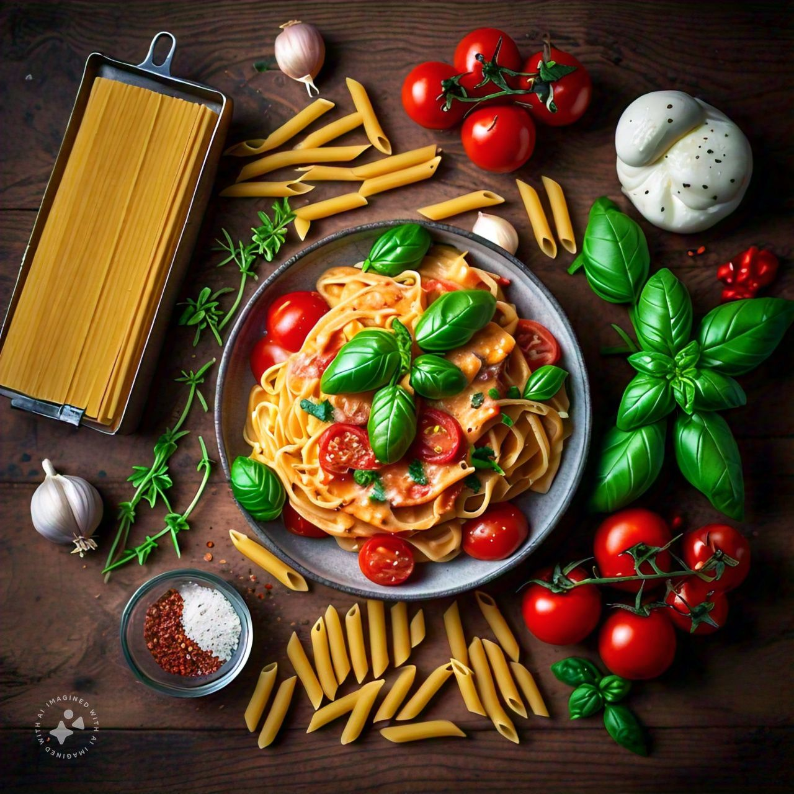
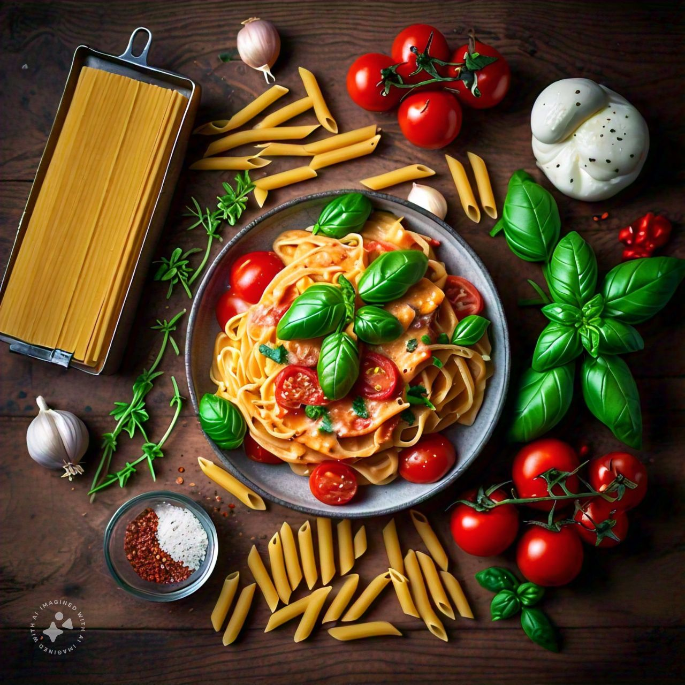
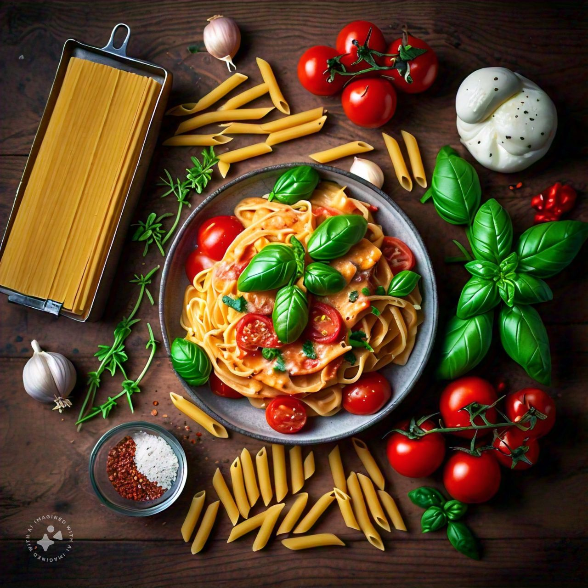

- Prep Time:25 minutes
- Cook Time:35 minutes
- Total Time:60 minutes

Tomato Pasta dishes are indulgent and comforting, characterized by their rich, velvety sauces. Typically, the pasta is cooked al dente and then coated in a creamy sauce made from ingredients like heavy cream, butter, and Parmesan cheese.

Serve with your favorite pasta and enjoy!